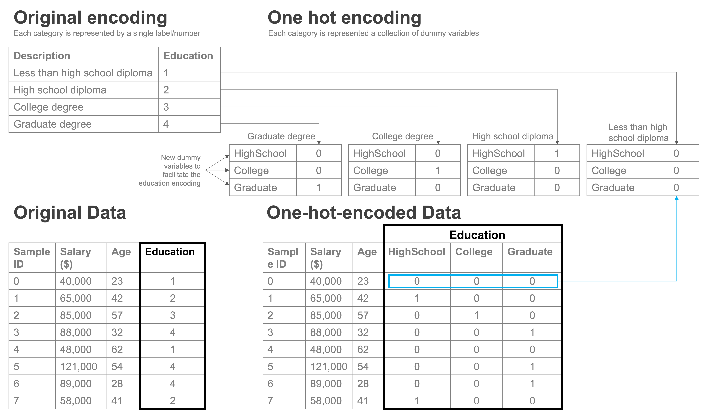

Categorical Variables, Indicator Variables and Linear Regression#
An important concept in working with linear regressions is how to handle categorical data.
In our last reading on linear regression, we limited our discussion to how it works with numeric variables, like prices, square footage, or condition ratings. In each case, these have been examples of cardinal variables — variables in which constant changes in the value of the variable have the same significance, regardless of the starting and end points. Moving from 100 to 101 square feet is the same as moving from 1,000 to 1,001 square feet, for example, and moving from condition=1 to condition=2 is supposed to have the same meaning as moving from condition=4 to condition=5.
But data science is full of factors that are not cardinal variables we may wish to incorporate into our analysis, such as a patient’s race, gender, and education level, or the neighborhood in which a property is located.
We call these variables categorical variables because each distinct value of the variable — like each potential racial classification for a patient — is a distinct category without a clear relationship to other categories. Categorical variables are often stored as strings ("Male" and "Female" for gender, for example), but they can also be stored as numeric datatypes (neighborhoods in our housing data are represented in integer zip codes). But even when they are represented as numbers (like zip codes), those numbers are just labels for categories — there’s no sense in which we’d expect that moving from zip code 90210 to 90211 would have the same effect on the price of a home as moving from 11110 to 11111, as with cardinal variables.
Thankfully, with the use of indicator variables (also often called “dummy variables”), categorical variables are relatively easy to accommodate within linear regressions.
Binary Categorical Variables#
To illustrate how indicator variables operate, let’s start by considering a categorical variable in our housing dataset that only takes on two values — waterfront. When a property is located along a body of water, the value of waterfront is 1, and when it is not, the value of waterfront is 0.
This type of binary categorical variable is not uncommon. Gender, for example, is often stored in datasets as a binary indicator variable (potentially called female) that takes on a value of 1 if the respondent identifies as a woman and 0 if they identify as male (obviously, society is increasingly coming to acknowledge that this simple dichotomous classification scheme is simplistic, and so you will see more categories for gender in newer datasets, but this two-category coding is still very common). Similarly, in experiments, observations are in either the treatment group (treatment is 1) or the control group (treatment is 0).
Moreover, this coding scheme is easy to create in situations where the dataset stores values as a string. Suppose, for example, you have a dataset in which gender is coded with the strings "male" and "female". You can easily make this a 0-1 variable with:
df["female"] = (df["gender"] == "female").astype("int")
Variables that take on only the values of 0 or 1 “indicator variables” because they indicate membership in a specific group.
Interpreting Binary Indicator Variables in Regression#
Once your binary variable has been converted to a 0-1 indicator variable, we can add it to our regression just like any other variable:
import pandas as pd
import numpy as np
import statsmodels.formula.api as smf
pd.set_option("mode.copy_on_write", True)
home_prices = pd.read_csv("data/kc_house_data.csv")
price_reg = smf.ols("price ~ waterfront", data=home_prices).fit()
price_reg.summary()
| Dep. Variable: | price | R-squared: | 0.071 |
|---|---|---|---|
| Model: | OLS | Adj. R-squared: | 0.071 |
| Method: | Least Squares | F-statistic: | 1650. |
| Date: | Sat, 20 Jul 2024 | Prob (F-statistic): | 0.00 |
| Time: | 18:44:13 | Log-Likelihood: | -3.0681e+05 |
| No. Observations: | 21613 | AIC: | 6.136e+05 |
| Df Residuals: | 21611 | BIC: | 6.136e+05 |
| Df Model: | 1 | ||
| Covariance Type: | nonrobust |
| coef | std err | t | P>|t| | [0.025 | 0.975] | |
|---|---|---|---|---|---|---|
| Intercept | 5.316e+05 | 2416.194 | 220.000 | 0.000 | 5.27e+05 | 5.36e+05 |
| waterfront | 1.13e+06 | 2.78e+04 | 40.626 | 0.000 | 1.08e+06 | 1.18e+06 |
| Omnibus: | 17750.357 | Durbin-Watson: | 1.962 |
|---|---|---|---|
| Prob(Omnibus): | 0.000 | Jarque-Bera (JB): | 924317.834 |
| Skew: | 3.605 | Prob(JB): | 0.00 |
| Kurtosis: | 34.215 | Cond. No. | 11.6 |
Notes:
[1] Standard Errors assume that the covariance matrix of the errors is correctly specified.
We can then interpret the coefficient associated with our indicator variable — in this case, about 1,130,000 — as the average difference between houses when the variable equals 1 (in other words, when a house is on the waterfront) and when the variable equals 0. In fact, a regression like this that only includes one binary indicator variable is exactly equivalent to a t-test, if you know what those are.
If we add other variables to the regression, then the interpretation is still basically the same: the coefficient is the average difference between observations where the indicator is 1 and the reference group (observations where the indicator is 0). The only difference is that when other variables are included, we would say that this is the average difference between houses on the water front and those not on the water front accounting for the other variables in the regression.
For example, suppose we knew that homes on the water front tended to be much bigger than homes that are not on the water front in this city. Because of this, when we compare all water front homes to non-water front homes, part of the difference we’re measuring isn’t actually the price increase caused by being on the water front, per se, but rather the simple fact that water front homes tend to be bigger, and bigger homes cost more.
To address this, we could include square footage in the regression. Then we can interpret the coefficient on waterfront as the average difference in home prices between houses on the water front and houses not on the water front accounting for differences in square footage (or, said differently, the average difference in prices for homes of the same size on and off the water front).
And indeed, because most houses on the water front tend to be bigger than houses not on the water front, when we control for square footage by including it in the regression, the coefficient on waterfront falls from 1,130,000 to about 830,000.
price_reg = smf.ols("price ~ waterfront + sqft_living", data=home_prices).fit()
price_reg.summary()
| Dep. Variable: | price | R-squared: | 0.531 |
|---|---|---|---|
| Model: | OLS | Adj. R-squared: | 0.531 |
| Method: | Least Squares | F-statistic: | 1.222e+04 |
| Date: | Sat, 20 Jul 2024 | Prob (F-statistic): | 0.00 |
| Time: | 18:44:13 | Log-Likelihood: | -2.9943e+05 |
| No. Observations: | 21613 | AIC: | 5.989e+05 |
| Df Residuals: | 21610 | BIC: | 5.989e+05 |
| Df Model: | 2 | ||
| Covariance Type: | nonrobust |
| coef | std err | t | P>|t| | [0.025 | 0.975] | |
|---|---|---|---|---|---|---|
| Intercept | -3.296e+04 | 4242.971 | -7.768 | 0.000 | -4.13e+04 | -2.46e+04 |
| waterfront | 8.3e+05 | 1.99e+04 | 41.745 | 0.000 | 7.91e+05 | 8.69e+05 |
| sqft_living | 272.5066 | 1.873 | 145.499 | 0.000 | 268.836 | 276.178 |
| Omnibus: | 13423.699 | Durbin-Watson: | 1.980 |
|---|---|---|---|
| Prob(Omnibus): | 0.000 | Jarque-Bera (JB): | 444123.936 |
| Skew: | 2.462 | Prob(JB): | 0.00 |
| Kurtosis: | 24.655 | Cond. No. | 2.64e+04 |
Notes:
[1] Standard Errors assume that the covariance matrix of the errors is correctly specified.
[2] The condition number is large, 2.64e+04. This might indicate that there are
strong multicollinearity or other numerical problems.
Indicator Variables, Categorical Variables, and One-Hot Encoding#
Of course, not all categorical variables are binary — education, race, and neighborhood are all examples of factors we might want to include in a data science analysis that are categorical and which have far more than two possible values.
We can account for these types of categorical variables using one-hot encoding. The idea of one-hot encoding is to create a series of 0-1 indicator variables, one for each unique value of the variable.
To illustrate, suppose you are analyzing data on salaries, and your data includes a variable for education. The variable has values 1, 2, 3, and 4. The documentation says the variable reports the highest level of education completed by the respondent and that values of 1 are for respondents with “less than a high school diploma,” 2 is for respondents who graduated high school, 3 is for respondents who graduated college, and 4 is for respondents with a graduate degree.
Clearly, there’s no reason to think that going from not having a high school diploma to graduating high school (moving from 1 to 2) would have the same effect on earnings as moving from being a high school graduate (2) to becoming a college graduate (3). So even though this variable is stored as an int datatype, we wouldn’t want to treat it as a normal, cardinal variable.
Instead, we can create an 0-1 indicator variable for “does respondent have less than a high school diploma,” another variable for “is respondent’s highest educational level a high school diploma,” one for “is respondent’s highest educational level a college degree,” and finally one for “is respondent’s highest educational level a graduate degree.” Essentially, the data would look like this:

salaries = pd.DataFrame({"education": [1, 2, 3, 2, 1, 4]})
salaries
| education | |
|---|---|
| 0 | 1 |
| 1 | 2 |
| 2 | 3 |
| 3 | 2 |
| 4 | 1 |
| 5 | 4 |
one_hot_encodings = pd.get_dummies(salaries["education"], drop_first=True).astype("int")
one_hot_encodings = one_hot_encodings.rename(
columns={2: "highschool", 3: "college", 4: "graduate"}
)
pd.concat([salaries, one_hot_encodings], axis="columns")
| education | highschool | college | graduate | |
|---|---|---|---|---|
| 0 | 1 | 0 | 0 | 0 |
| 1 | 2 | 1 | 0 | 0 |
| 2 | 3 | 0 | 1 | 0 |
| 3 | 2 | 1 | 0 | 0 |
| 4 | 1 | 0 | 0 | 0 |
| 5 | 4 | 0 | 0 | 1 |
As you’ll see, we didn’t actually create an indicator for every value — we created an indicator for every value but 1. education takes on 4 values, but we have only created 3 indicator variables. That’s because one category is implied when the other three indicator variables are equal to 0. In this case, when education is equal to 1, the three indicator variables all take on a value of 0. This omitted category (here, having less than a high school diploma) is referred to as the “reference category.”
Now that we’ve converted this variable into indicators, we can put them into a regression and interpret the coefficient on each as the average difference between the group indicated by the specific indicator and the reference category (the condition for which all the indicator variables in the regression are equal to 0).
To illustrate, let’s consider the number of bedrooms in a house. While we could think of the number of bathrooms as a normal cardinal variable, in reality there aren’t many people deciding between a 1 bedroom and a 2 or more bedroom house, so they market for 1 bedroom homes and homes with more bedrooms are basically entirely different markets.
These dataset also has some homes with zero bedrooms (?!), and some with a ton of bedrooms (up to 33!), so let’s also subset for sane homes:
sane_home_prices = home_prices[
(0 < home_prices["bedrooms"]) & (home_prices["bedrooms"] <= 6)
]
price_reg = smf.ols("price ~ C(bedrooms)", data=sane_home_prices).fit()
price_reg.summary()
| Dep. Variable: | price | R-squared: | 0.104 |
|---|---|---|---|
| Model: | OLS | Adj. R-squared: | 0.104 |
| Method: | Least Squares | F-statistic: | 500.1 |
| Date: | Sat, 20 Jul 2024 | Prob (F-statistic): | 0.00 |
| Time: | 18:44:13 | Log-Likelihood: | -3.0523e+05 |
| No. Observations: | 21538 | AIC: | 6.105e+05 |
| Df Residuals: | 21532 | BIC: | 6.105e+05 |
| Df Model: | 5 | ||
| Covariance Type: | nonrobust |
| coef | std err | t | P>|t| | [0.025 | 0.975] | |
|---|---|---|---|---|---|---|
| Intercept | 3.176e+05 | 2.45e+04 | 12.969 | 0.000 | 2.7e+05 | 3.66e+05 |
| C(bedrooms)[T.2] | 8.373e+04 | 2.54e+04 | 3.302 | 0.001 | 3.4e+04 | 1.33e+05 |
| C(bedrooms)[T.3] | 1.486e+05 | 2.47e+04 | 6.006 | 0.000 | 1e+05 | 1.97e+05 |
| C(bedrooms)[T.4] | 3.178e+05 | 2.48e+04 | 12.791 | 0.000 | 2.69e+05 | 3.66e+05 |
| C(bedrooms)[T.5] | 4.69e+05 | 2.6e+04 | 18.058 | 0.000 | 4.18e+05 | 5.2e+05 |
| C(bedrooms)[T.6] | 5.079e+05 | 3.22e+04 | 15.759 | 0.000 | 4.45e+05 | 5.71e+05 |
| Omnibus: | 19014.949 | Durbin-Watson: | 1.958 |
|---|---|---|---|
| Prob(Omnibus): | 0.000 | Jarque-Bera (JB): | 1234316.627 |
| Skew: | 3.973 | Prob(JB): | 0.00 |
| Kurtosis: | 39.225 | Cond. No. | 30.0 |
Notes:
[1] Standard Errors assume that the covariance matrix of the errors is correctly specified.
(You will notice that rather than creating indicator variables with the pd.get_dummies() function, I just put C() around bedrooms in the regression — that’s a trick we’ll discuss in more detail in a future reading.)
The way to read this table is that C(bedrooms)[T.2] is the coefficient on the indicator for bedrooms equalling 2, C(bedrooms)[T.3] is for bedrooms equalling 3, etc. The reference category (the category for which we did not create an indicator variable) is when bedrooms was 1.
Because our reference category is one-bedroom homes, the bedroom coefficients all tell us the average difference between a home with [number of homes implied by indicator] and a one-bedroom home. So the coefficient of about 83,730 on C(bedrooms)[T.2] means that two bedroom homes are, on average, 83,730 dollars more expensive than single bedroom homes.
And if we want to know the difference in the average price of a two-bedroom home and a three bedroom home? That statistic is not immediately present in the table, but can be easily derived by taking the difference of the coefficient on C(bedrooms)[T.2] and C(bedrooms)[T.3] — since each of these is the difference between a 2 / 3 bedroom house and a 1 bedroom house, when you take the difference, the “minus the average price of a 1 bedroom house” cancels out (again, don’t worry about the code syntax. We’ll cover it in detail later):
diff = price_reg.params["C(bedrooms)[T.3]"] - price_reg.params["C(bedrooms)[T.2]"]
print(
f"The avg difference between a three and two bedroom home is: {diff:,.0f} dollars"
)
The avg difference between a three and two bedroom home is: 64,859 dollars
Next Steps#
We’ve covered a lot of material in this reading and the one that preceded it. If you’ve never seen a linear regression before, there’s a good chance you’re feeling a little overwhelmed. Don’t worry — remember that the goal of these readings is just to give you enough of a sense of how linear regressions work for us to discuss how linear regressions are implemented in Python. These readings are definitely not going to teach you all you need to know about linear regression or to even make you feel like you really get regression. And that’s ok. So long as you can get a lot out of the readings that follow, you’re doing great.